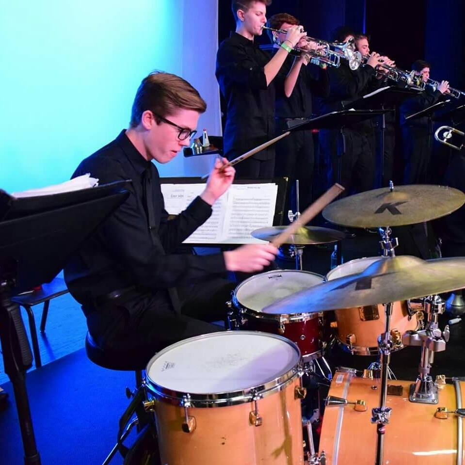
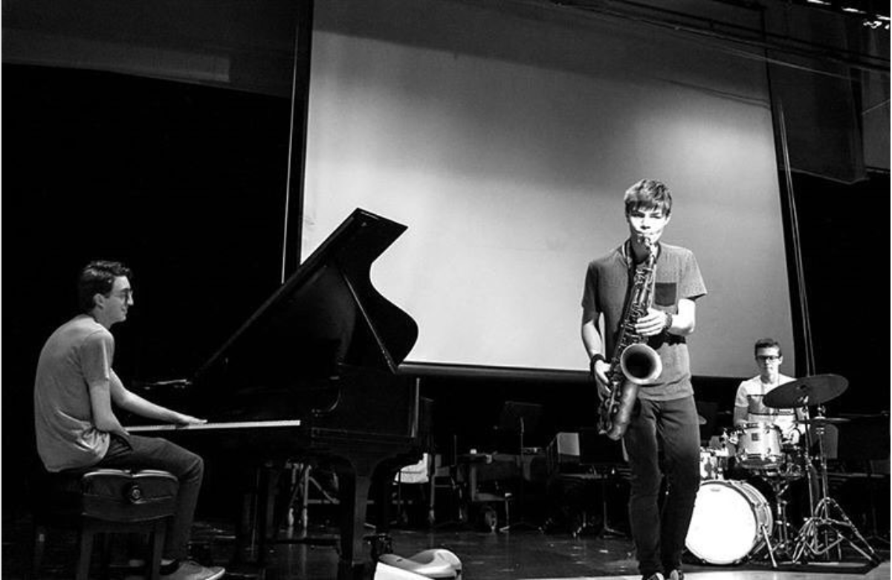

Josh Platt
Drummer, Educator, Composer/Arranger
 Being a musician from an early age, I had my first performance when I was nine years old. I continued to perform locally as a middle school student and my first major performance in high school, playing in Macy’s Thanksgiving Day Parade, changed my life and gave me memories that I’ll never forget. Performing at the Berklee College of Music Jazz Festival and the Savannah Jazz Festival provided a way for me to study with world renowned musicians such as Scotty Barnhart, Bob Reynolds, Wycliffe Gordon, Matt Kane, and many more who passed along their knowledge and wisdom. Performing is something special. It's where you get to show all of the time and energy that you put in behind the scenes.
 Music is powerful in the sense that it lends itself to educate the next generation. That is how this art form is still around to this day. In this photo, my band "CHAKA", is performing a masterclass for the organization "T.E.A.M.S.". This organization helps underpriviliged children get a hands on experience with music. I also work individually with students whenever I can. I see private lessons as one of the best ways to get better at somthing you have a passion for in life.
I have a great appreciation for every genre of music because I believe that each has its own special qualities and I love empathizing with what the musician or composer is trying to convey. Music is the true definition of equality in that everyone has an opportunity to express what they wish. Jazz is unique in that it allows me to create on the spot for an audience and take them along on my improvisational journey. Jazz is about having a conversation with your fellow musicians and coming together to create a universal work of art; it’s a genre where you pay respect to the person who did it before while at the same time making it original. Through compositions and arrangements, I take what once was old and input my personal ideas in it, thus making it something new.